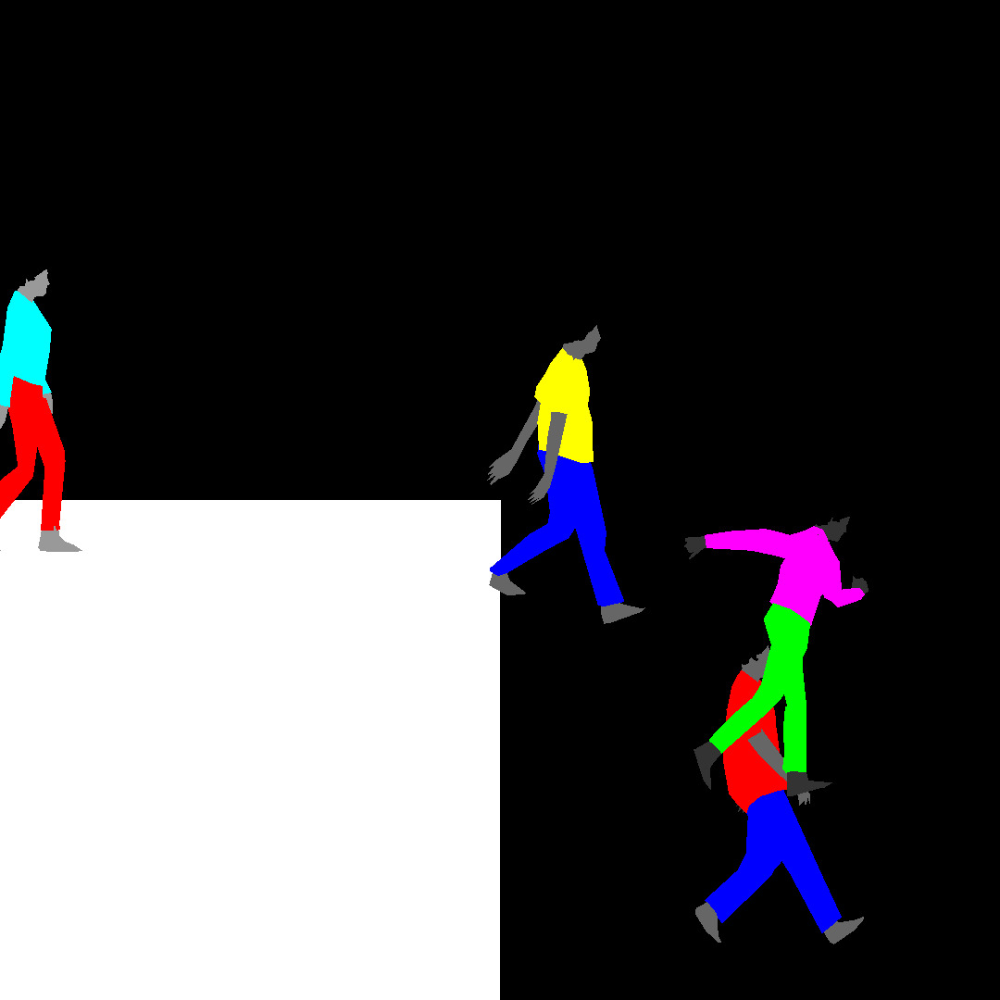
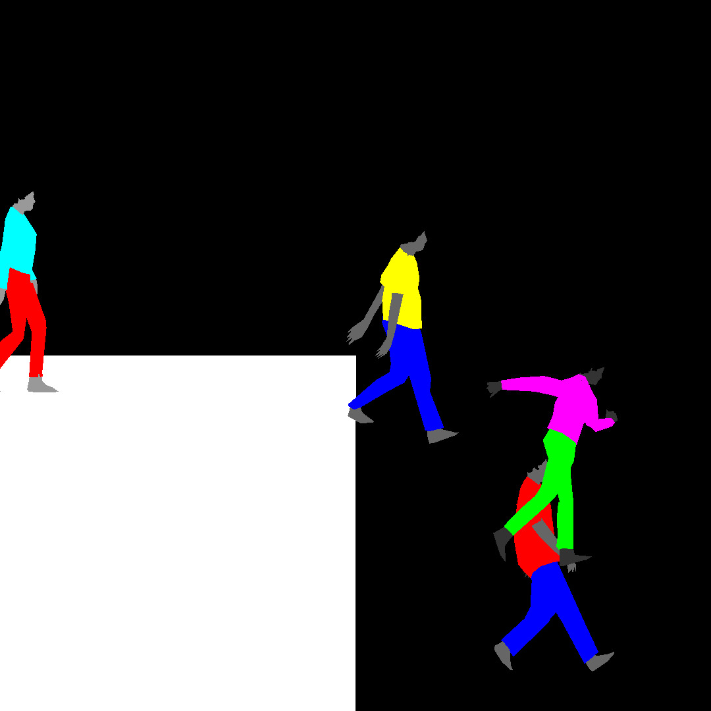

Responsive Eye is a multimedia exhibition in three parts by Brooklyn artist PETER BURR.
Drawing upon the history of minimalist painting and op-art, the works in this show are rooted in a series of optical illusions highlighting the intensities and occlusions that puncture our awareness. Within the flat color and flickering surface lies a portrait of an anxious society pushing at the boundary of its own teetering attention.
Go to tttelematiccc.com to see the online event schedule and to arrange an IRL viewing.
A B Body
A B BODY is a collection of 9 screen-based portraits. The work is named after the Attentional Blink (AB) phenomena - a threshold where humans fail to perceive two pieces of rapid-fire visual information. The blindness that occurs during this speed-death can sometimes be short-circuited by charging the information with salient emotional features.
PEOPLE
PEOPLE is a computational artwork that runs for the duration of a workday. A vacant black & white landscape; the site of the day-long performance by a community of multi-colored avatars; slowly fills with flailing bodies.
KID GAMES
KID GAMES is an augmented reality work populating the gridded corner of a room. It is a 3-dimensional reconstruction of the 16th century painting “Kinderspiele” by Flemish artist Pieter Bruegel the Elder. In this historical artwork, hundreds of adult-looking children absorb themselves in many foolish games.
BLACK SQUARE
BLACK SQUARE is a short film examining contemporary life in the grid. It animates a philosophy of perception through an assault of optical illusions and human bodies writhing in rhythm to audio sampled from the opening of the 1965 Op Art exhibition "The Responsive Eye". Through the friction of this contrast, the picture of a divided society emerges from the limitations of their awareness.
A GATHERING OF TWO
A GATHERING OF TWO is a multimedia artwork exploring tonal experiments in psychophysics. It physicalizes phenomena explored in BLACK SQUARE through print material, highlighting the flatness and opacity of mechanically painted objects.